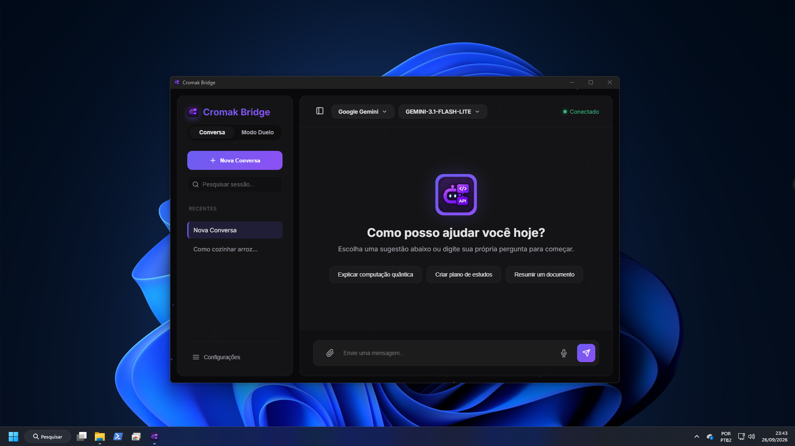
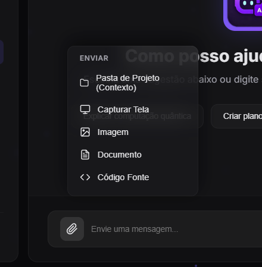
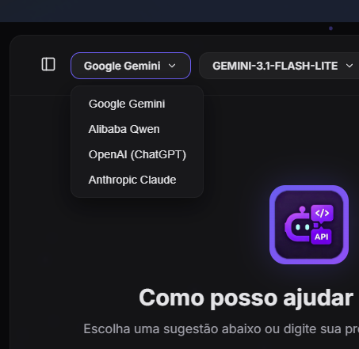
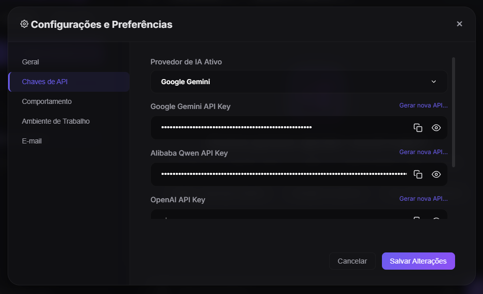
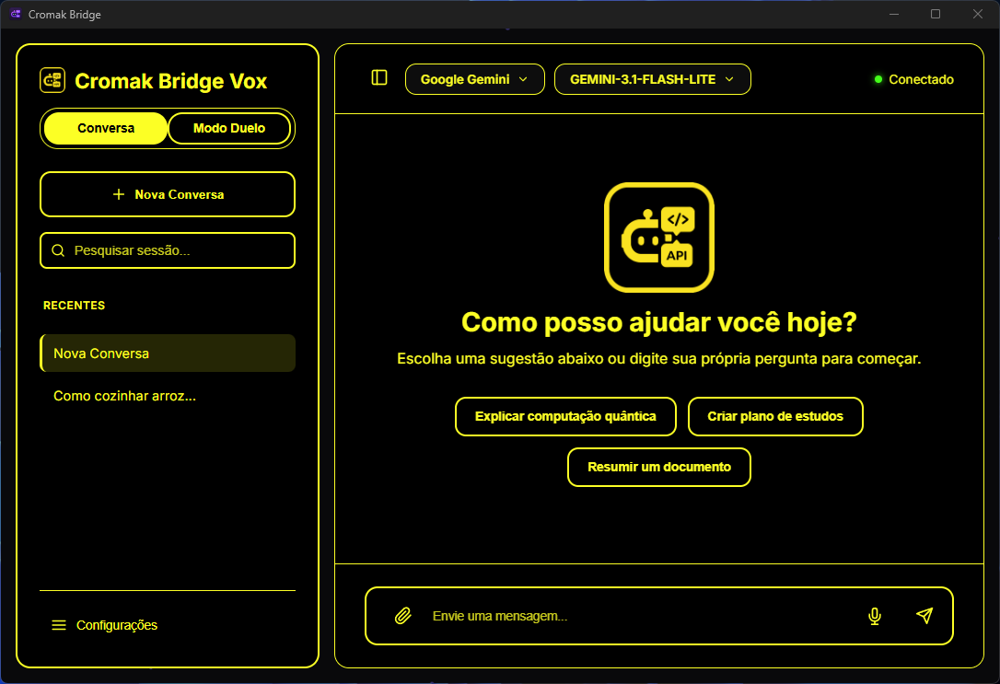
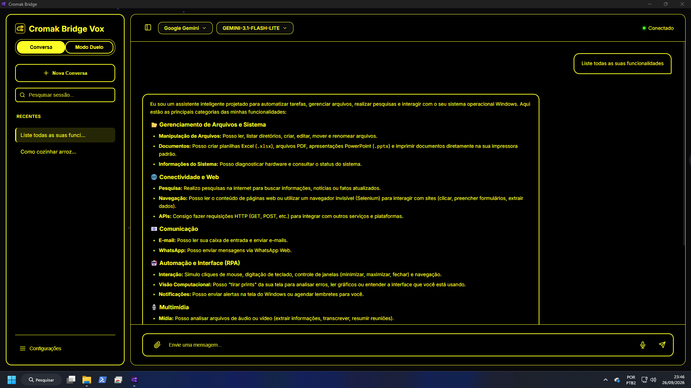
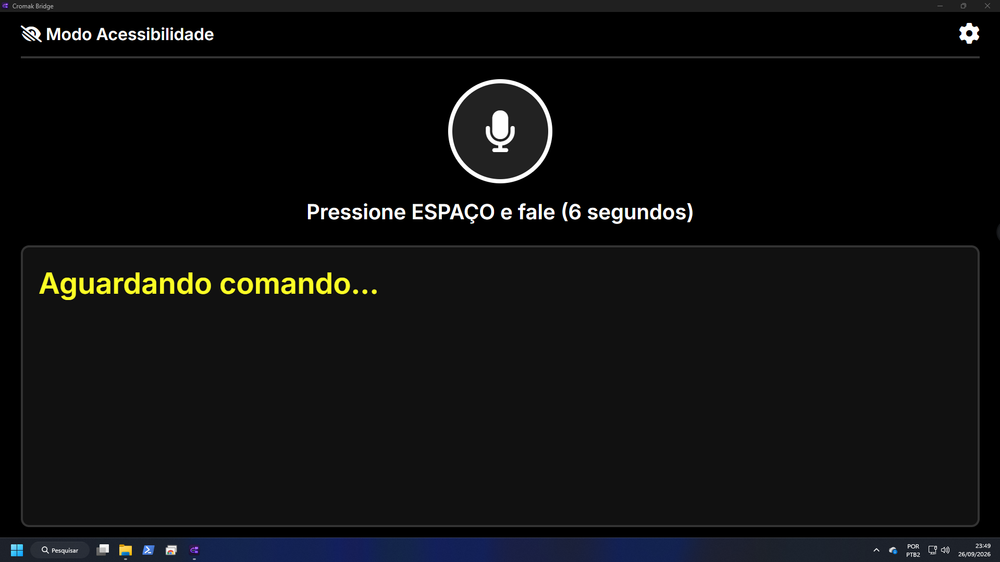

Cromak Bridge Vox
The Smart Engine for your desktop, focused on accessibility.
Version: 1.3.2 (build 2026.10) | Matrix Core
Technology only reaches its true potential when it leaves no one behind. Accessibility is not an "add-on feature"; it is the foundation. The future of AI must be accessible to everyone.

AI that Accesses Your System
Unlike a simple browser-based chat, Bridge Vox functions as a "Machine Agent" integrated into Windows. It was designed as a modern evolution of classic accessibility projects, powered directly by the fastest and most advanced APIs on the market (Groq Ultra-Fast LPU, Google Gemini 2.5, OpenAI, Claude, and Qwen).
🤖 Intelligent Auto-Coder
The Agent Mode allows the Artificial Intelligence to execute scripts, open websites and email clients directly, and alter, create, or manage files and folders on your local system. A programmer and assistant living in your PC.
👁️ Extreme Accessibility (NVDA)
Developed as a spiritual successor to Dosvox. Deep native integration with screen readers (NVDA and Windows Narrator), High Contrast mode for Low Vision, auto-focus on responses, and 100% keyboard and voice navigation.
🔑 BYOK & Groq Ultra-Fast
Bring your own key. Connect directly to the world's most powerful APIs (Groq LPU, Google Gemini, OpenAI, Claude, Qwen) with instant response speed. No subscriptions or middlemen from Cromak.
Interface Overview
Click on the images to expand and see the app details.
Main Interface
Modern and focused visual in automatic fullscreen (F11). Chat with the Artificial Intelligence directly from your desktop without browser distractions.

Multimodal & Attachments
Attach images, spreadsheets, or code blocks with ease. Bridge reads the entire context and works upon your files.

Instant AI Switching
Need ultra-fast speed or another perspective? Switch between Groq (Ultra-Fast), Gemini 2.5, ChatGPT (OpenAI), Claude, or Qwen instantly.

Total Control
Complete native menu. Access all your preferences, providers, API keys, and online update verification in a secure environment.

High Contrast
Designed for people with Low Vision. 100% black backgrounds, bright yellow borders and texts, eliminating visual pollution.

Autonomous Execution
The Agent doesn't just chat, it acts. It opens sites for you, prepares emails, writes reports, and automates your computer locally.

Total Keyboard & Voice Autonomy
Designed for total blindness with NVDA & Narrator support. Navigate through messages, re-read responses (F3 / Ctrl+L), and speak via F2 without ever touching the mouse.
What can Bridge do for you?
Far more than just a simple chat in a browser tab. Cromak Bridge is a true "Machine Agent" capable of interacting with, reading, and managing your computer by operating advanced tools in the background.
Our Mission: Why did we create Bridge?
We believe the future of Artificial Intelligence shouldn't be a luxury locked behind expensive $20 monthly subscriptions, nor an exclusive technology. Bridge was born from a deep desire to democratize access to the world's most advanced technology—putting the power of AI into the hands of schools, institutions, and, above all, people with visual impairments (low vision and total blindness). The computer should adapt to the human, not the other way around. That is why Bridge listens, speaks, sees your screen, and executes commands, acting as the eyes and hands for those who need them.
📁 File and System Management
- Manipulation: Reads, edits, renames, moves, and lists local files and folders.
- Databases: Performs read queries on SQLite databases.
- Diagnostics: Reads hardware and operating system information.
⚙️ Automation and Interface (RPA)
- Hardware/Software: Controls volume, locks screen, manages windows (maximize, minimize).
- Simulation: Able to simulate mouse clicks and keyboard typing.
- Notifications: Creates reminders and sends native Windows notifications.
🌐 Internet and Direct Navigation
- Direct Opening for Visually Impaired: Opens any website or prepares pre-filled emails in your default browser/mail app via voice or text command.
- Ghost Navigation: Interacts with complex websites in the background (extracts summaries and data).
- Direct Communication: Reads inboxes, sends Emails and WhatsApp Web messages.
📊 Multimedia, Productivity & Vision
- Documents & Media: Creates spreadsheets (Excel) and PDFs. Plays music, radios, or downloads from YouTube.
- Screen Analysis: Takes screenshots of your own screen to analyze charts or interface errors.
- Memory: The Agent remembers preferences and rules between conversations.
Privacy and Local-First
-
No Middlemen Servers
Cromak Technology does not act as an interceptor. Your messages and files leave your PC and go DIRECTLY to Groq, Google, OpenAI, or Anthropic via your encrypted API Key.
-
Local Audio & NVDA Accessibility
Shielded microphone capture (Walkie-Talkie via F2 key) and direct aria-live integration with NVDA and Windows Narrator, with sound cues and voice status feedback ("Please wait, processing...").
-
Strategic Global Hotkeys
Invoke Bridge from anywhere in Windows using Alt + Space (or Ctrl + Space). Use F2 for voice, F3 / Ctrl + L to re-read the last AI answer, F5 for a new chat, F11 for Fullscreen, and F1 for the Accessible Help Manual.
⚠️ Auto-Coder Warning
Bridge has read and write permissions on your local disk if "Agent Mode" is activated. Use at your own risk. We are not responsible for deleted files or unwanted scripts executed at the user's request.
AI Functions Table
Bridge features advanced built-in tools (Auto-Coder). Here's how to test some of them:
| Skill Description | Command Example (What to say/type) |
|---|---|
| Open Websites & Pre-filled Emails | "Open the Cromak support page for me" or "Prepare an email to support." |
| Read local files (TXT, PDF, etc.) | "Read the report.pdf file on my Desktop and summarize it." |
| Create Spreadsheets and Documents | "Create an Excel spreadsheet in Downloads named Expenses with 3 fictitious costs." |
| Web Navigation (Ghost Browser) | "Access the Wikipedia site about Python and extract the page summary." |
| RPA (Simulate Mouse and Keyboard) | "Press the 'win' key, type 'calculator' and press Enter to open the app." |
| Computer Vision | "Take a screenshot of my screen right now and describe the error I'm seeing." |
| Automatic WhatsApp Web | "Send 'Hello, this is a test' to my number on WhatsApp." |
| Windows Window Management | "Minimize all open windows to show my Desktop." |
| Hardware Control | "Lower the volume a bit." or "Turn on my webcam silently and take a photo." |
| Reminders and Notifications (Pop-up) | "Send me a Windows notification in 5 minutes reminding me to drink water." |
| Long-Term Memory | "Remember that my favorite color is blue." (On another day: "What do you know about me?") |
System Compatibility
Compiled independently (Stand-Alone). Does not require the installation of Python, libraries, or complex dependencies on your machine. The software is extremely lightweight and optimized. Recommended requirements: Minimum 8GB RAM and Core i3 processor (or equivalent).
Note: The interface is available in Portuguese, English, and Spanish, and features full native integration with NVDA and Windows Narrator.
Download Cromak Bridge Vox (v1.3.2)
Cromak Bridge Vox is and always will be a 100% free and ad-free project. We built this tool not to profit from subscriptions, but to break down accessibility and technological barriers. Keeping this software updated, paying hosting costs, and developing new accessibility integrations for those who truly need them requires time and resources. If this software changed your routine or your company's, please consider becoming a sponsor. Your contribution is what keeps the wheels turning and allows us to continue impacting lives through open code.
Personal Use (Freeware)
- Full Software (v1.3.2)
- Full NVDA & Voice Accessibility
- Groq Ultra-Fast, Gemini, OpenAI & Claude
- Auto-Coder & Local Agent
- Total Privacy (Encrypted Local Key)
Project Supporter
- Donate the amount you wish:
- Helps with the continuous improvement of the software.
- Helps with Windows integrations
- Supports Accessibility tools
🔒 Proudly distributed by Cromak Technology.